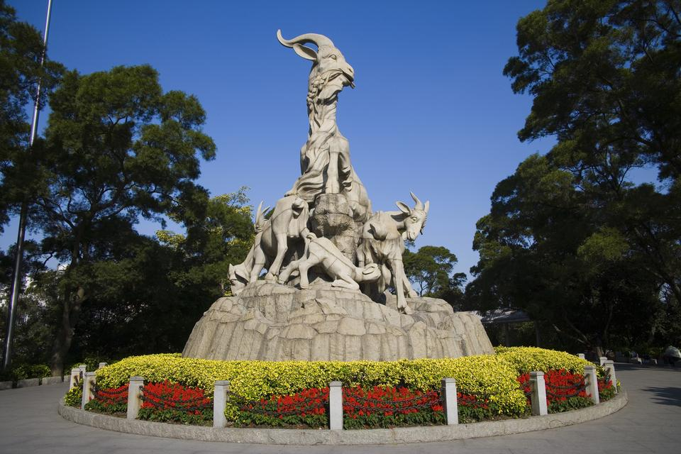
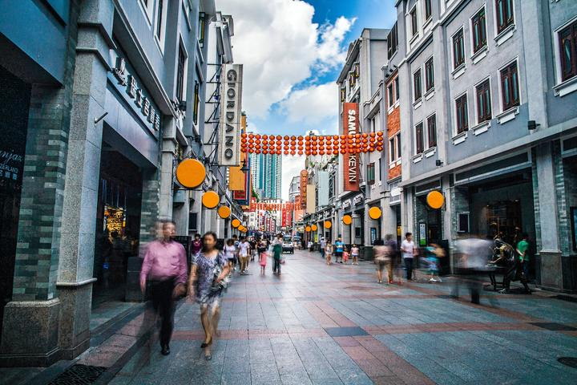
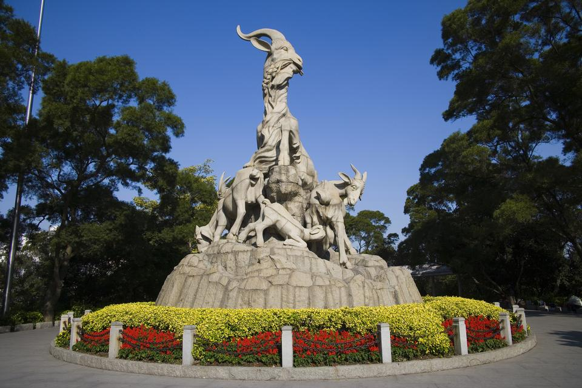
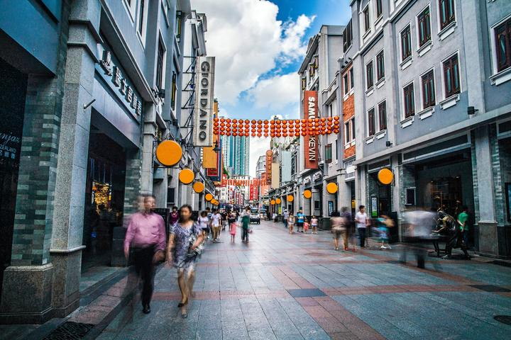
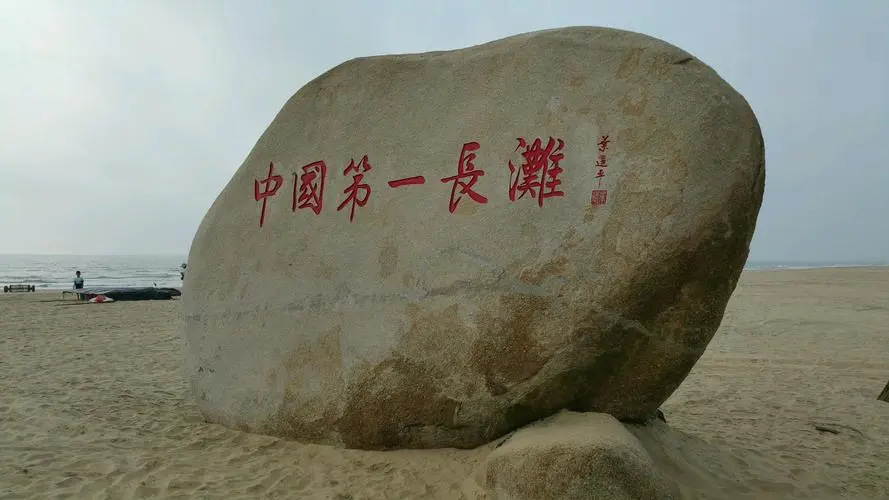
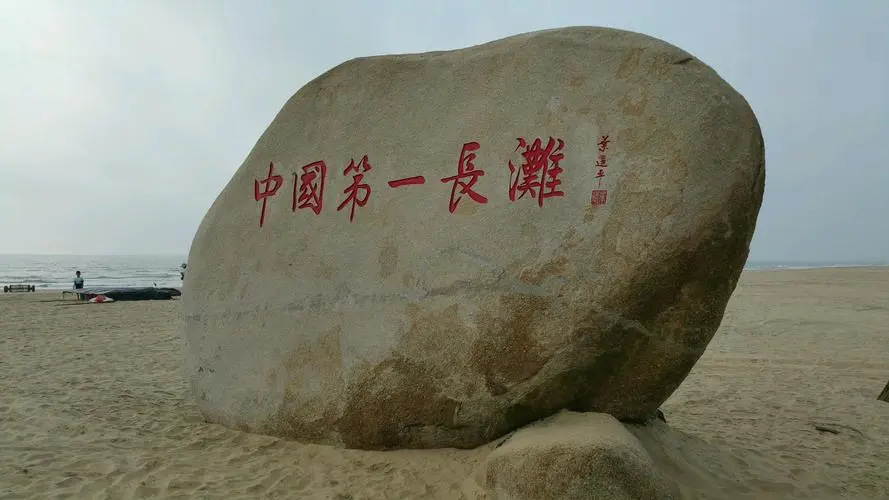
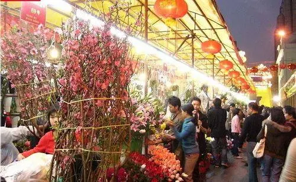
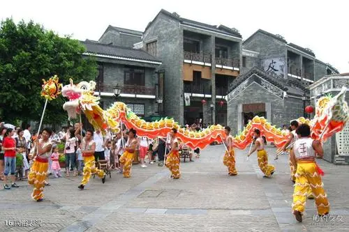
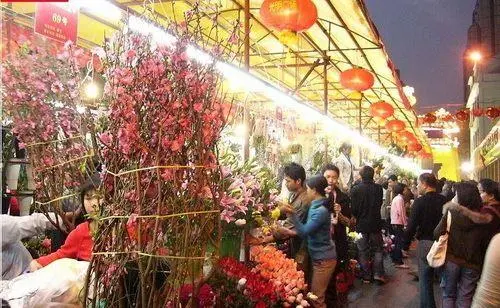
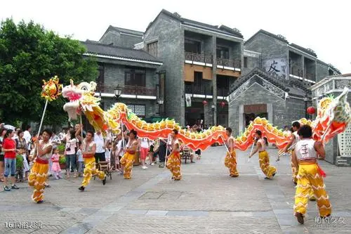

广州
广州好玩的地方有哪些？

 



 



About
广州必打卡项目——广州塔
广州塔建筑总高度600米，其中主塔体高450米，天线桅杆高150米，以中国第一、世界第三观光塔的地位，向世人展示腾飞广州、挑战自我、面向世界的视野和气魄。广州塔，因其独特设计造型，与珠江交相辉映，成为新中轴线上的亮丽景观。
广州塔营业时间为09:30-22:30，票厅售票及游客入塔时间为09:30-22:00，七月、八月，国家法定节假日，周五至周日以售票厅公开的运营时间为准
广州塔矗立在广州城市新中轴线与珠江景观线的交汇处，与海心沙亚运公园和珠江新城隔江相望，与广州歌剧院、广东省博物馆、广州图书馆、广州第二少年宫四大文化建筑遥相呼应，是广州新的制高点。广州塔塔体高约450米，天线桅杆高150米，以总高度600米占据世界第一至高电视塔的地位。
About
广州必打卡项目—— 珠江夜游
珠江游是南国羊城的一大特色游，珠江美景可媲美于香港维多利亚港，其景色迷人，碧水潋艳，华灯闪烁，犹如七色明珠镶嵌十里珠江，汇成一条异彩纷呈的珠江彩虹。沿江可观赏到“鹅潭夜月”、“双桥烟雨”、“珠海丹心”、“珠江秋月”、“珠水晴波”等羊城美景，还有珠江两岸三十多个文化历史景点，使你尽情领略南国风土人情。
天字码头位于越秀区沿江中路(与著名的北京路步行街相连)，交通便利。 地铁： 乘坐地铁2号线海珠广场A出口面对江向左走350米就到天字码头，也可以乘坐地铁6号线北京路站A出口面向南走300米就到天字码头
乘坐公交车： 南关站下向前走100米： 公交车： 夜1路 1路 夜8路 10路 夜16路 夜32路 183路 194路 219路 544路 天字码头站向回走100米： 公交车：旅游2线、4路、夜31路、57路、128路、131B、131A、208路、238路公交车可达。。

About
广州必打卡项目——白云山
白云山由30多座山峰组成，峰峦重叠,溪涧纵横,登高可俯览全市，遥望珠江。每当雨后天晴或暮春时节，山间白云缭绕，蔚为奇观，白之名由此得来。 白云山风景区是新"羊城八景"之首，素有"南越第一山"、“羊城第一秀"之称。自古以来，白云山一直是广州有名的风景胜地，历史上羊城八景中的"菊湖云影"、，"白.云晚望"、"蒲间濂泉"、" 景泰僧归' 都在白云里
白云山，是新“羊城八景”之首、国家重点风景名胜区、全国文明风景旅游区和国家AAAAA级景区。它位于广州市的 东北部，为南粤名山之一，自古就有“羊城第一秀”之称。山体相当宽阔，由30多座山峰组成，为广东最高峰九连山的支脉。面积20.98平方公里，主峰摩星 岭高382米，峰峦重叠，溪涧纵横，登高可俯览全市，遥望珠江。每当雨后天晴或暮春时节，山间白云缭绕，蔚为奇观，白云山之名由此得来。
开放时间：6：30--21：00 门票价格：进山门票5元
广州习俗
老广州，粤语的城市，老西关的味道
 



1.春节期间的除夕迎春花市和元宵节，端午节， 番禺荷花节，从化、增城的荔枝节，重阳节，中国旅游艺术节暨广东欢乐节，广州国际美食节等。 2.还有每年元旦均举行的广州风情贺年缤纷大巡游，中秋节的中秋灯会，以及10月举行的广州旅游文艺会演等，为广州市这座"花城"增添了绚丽的色彩。 3.春节风俗，插桃花、摆年橘、团年饭、煮汤圆、逗利是（领红包）、行花街、开年、人日、闹元宵、游花地等；